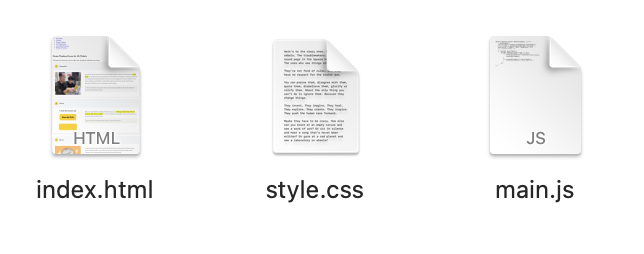
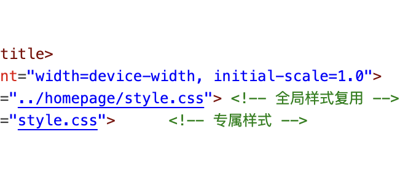

Modular Design
Each html file has its own css & js file. So when one file goes wrong, the other pages won'y be affected.
Clear Comment
The html, css files are so long, that without comments, I can hardly tell which code is taking about what. So comments are really important.
Explanation of Challenging Parts
I think the most difficult point lies in writing javascript. Especially the logic of controlling the navigation bar with the keyboard. Because I have been exposed to c++ a lot before, I would write javascript with the thinking of c++, which left me completely confused. However, the web develop course only introduced a few simple functions of javascript. So I searched for a lot of materials and videos online, and learned the source codes of many websites. Finally, I created this function.
Developer Tools Usage
Tech Stack & Tools
This project applies Design-Thinking methodology, focusing on modular development based on
repository structure (e.g., homepage, portfolio modules) to ensure
code maintainability and user experience. Below are the core technologies and tools used:

Copilot
Copilot is a built-in ai assistant of visual studio code. He can help me correct syntax errors in the code and modify functions such as error reporting. When I encounter problems such as code crashes, it can help me solve 70% of them.

RUNOOB
RUNOOB is a website for learning website creation. There are detailed labels inside, telling me how the grammar of different functions is implemented, including many methods that were not mentioned in the Intro to Web Development course.

GitHub
GitHub is the confidence for me to boldly modify my code. Because many times my code would report errors, during repeated modifications, I found that I couldn't return to the previous version. With GitHub, every time I complete a key part, I upload the code. This way, I won't mess up the code during coding.
Reflection
This web design project for my CS class was a good experience. I started with HTML to create my webpage's structure. I used tags like div, header, p, and a to build it. For example, I made a nav bar and content area with div, and added links between pages using a tags. It was interesting to see the site take shape step by step.
Next, I used CSS to style the webpage. I learned about the box model, which includes margins, padding, and borders. I added padding to buttons to make them look better and used margins to space out sections. I also used flexbox to align my nav bar neatly and grid to make a photo gallery that adjusts to different screen sizes. Choosing colors and fonts was fun, and I tested different styles to find what worked best.
JavaScript was challenging. My slideshow had errors, and it took time to fix them. I used the browser console to find mistakes, which helped me solve the problem. Keeping styles consistent across pages was also hard. I used CSS classes to make sure everything looked the same, and it took some effort to get it right.
This project helped me improve a lot. I started with no web design skills and ended up with a website that works well and looks decent. I thought about users while building it. I added alt text to images so everyone could use the site. I also tested it on my phone to make sure it was responsive and checked that it worked with just a keyboard for navigation.
I'm satisfied with my progress. I went from basic HTML to adding small animations with CSS, like buttons that change color on hover. I also used JavaScript to check form inputs, which was tricky but worth it. Each part of the project taught me something new, and I liked seeing it all come together. Building a full website from scratch was a big accomplishment, and I feel more confident in my skills now.